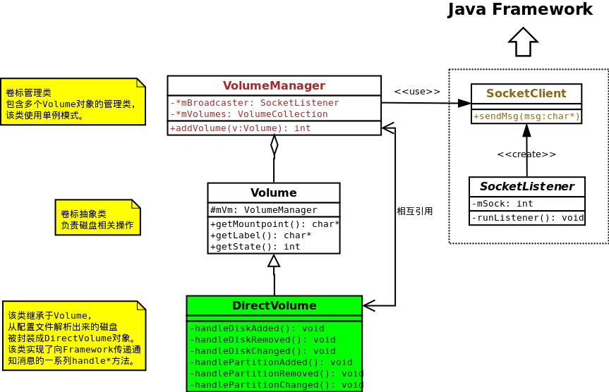
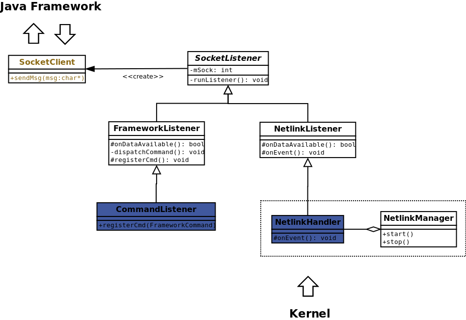
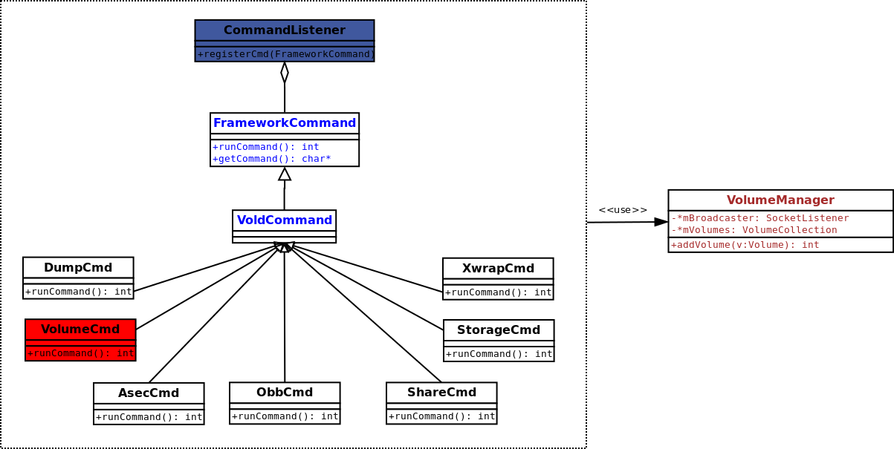
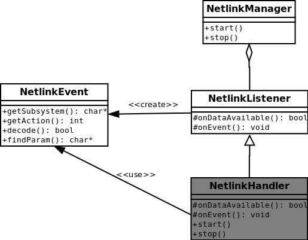

Vold功能实现
相关文件
system/vold/main.cpp
system/vold/CommandListener.cpp
system/vold/DirectVolume.cpp
system/vold/NetlinkManager.cpp
system/vold/NetlinkHandler.cpp
system/vold/Volume.cpp
system/vold/VolumeManager.cpp
主流程解析
-
main()方法主要执行以下流程：
-
创建VolumeManager单例对象。该对象包含一个Volume对象的列表，通过这些Volume对象对设备做具体操作。
-
创建NetlinkManager单例对象。该对象主要是创建与内核通信的socket，并接收来自底层的信息，然后传交给VolumeManager处理。
-
创建CommandListener对象，该对象用来和framework层通讯。
-
process_config方法解析vold.fstab文件，创建DirectVolume对象并加入链表。参见什么是Vold。
-
通过NetlinkManager启动线程监听来自内核的事件。
-
coldboot()用来对指定目录下uevent文件写入add信息，触发uevent事件。
-
通过CommandListener对象开启线程获取来自framework层的命令。
-
进入循环状态。
int main() {
......
// 创建VolumeManager单例对象
if (!(vm = VolumeManager::Instance())) {
exit(1);
};
// 创建NetlinkManager单例对象
if (!(nm = NetlinkManager::Instance())) {
exit(1);
};
// 创建CommandListener
cl = new CommandListener();
vm->setBroadcaster((SocketListener *) cl);
nm->setBroadcaster((SocketListener *) cl);
if (vm->start()) {
exit(1);
}
// 解析vold.fstab配置文件
if (process_config(vm)) {
}
// 监听内核的消息
if (nm->start()) {
exit(1);
}
// 通知内核上报uevent事件
coldboot("/sys/block");
// 监听framework层的消息
if (cl->startListener()) {
exit(1);
}
while(1) {
sleep(1000);
}
exit(0);
}
模块分类
挂载点及其管理
-
被挂载的设备或分区称为磁盘卷标，这个磁盘卷标被抽象成
Volume对象，该对象实现了对于磁盘的通用操作方法。
-
DirectVolume是Volume的子类，从vold.fstab中读取的每个需要挂载的设备都被实例化为
DirectVolume对象，该对象提供一系列handle操作，主要是实现了与Framework的交互。而对于磁盘的操作则由基类基完成。
-
VolumeManager是Volume的管理类，它包含Volume对象列表，在必要时会遍历这个列表对指定的Volume对象做操作。它包含一个CommandListener对象，为与Framework通讯提供了方法。

socket连接及其管理
-
Vold与framework层及内核通讯的机制是使用socket。SocketListener是对socket封装的抽象类。
-
连接framework层
-
FrameworkListener继承自SocketListener，该类同样是抽象类，具体实现子类为CommandListener。它负责与framework层通讯。
-
与framework层通信主要关注的是
onDataAvailable方法，该方法又调用dispatchCommand找到相应的Command对象做事件处理。
-
连接内核层
-
NetlinkListener继承自SocketListener，该类同样是抽象类，具体实现子类为NetlinkHandler。它用来与内核层通讯，将来自内核层的uevent事件向上传递。
-
与内核通信主要关注的是
onEvent方法，它通过调用VolumeManager类的handle*方法，将事件通知给framework层。
-
NetlinkManager用来管理NetlinkHander对象。
-
从数据流向上分析，和Framework的通信是双向的，而和内核的通信则是单向的，也就是说只能接收内核层的消息。
-
SocketListener是作为通信的监听端，接收到客户端请求后会得到一个Socket文件句柄：
-
该句柄被封装成SocketClient对象，并将该对象会作为参数传递给FrameworkCommand->runCommand()方法，从而实现Socket通信过程。
-
SocketListener会维护一个SocketClient对象的集合，从而处理多个客户端请求。

命令抽象
-
Framework层的命令通道被抽象成FrameworkCommand类。该类为抽象类，它有个中间子类VolumeCommand，由这个子类派生的实现类分别完成不同的功能。
-
具体子类完成的功能是解析来自Framework层的字符串命令，然后再通过VolumeManager实现相应的功能。

内核事件抽象
-
内核层的uevent事件被抽象成NetlinkEvent类，该类主要用来解析uevent文件中的add、remove、change等事件信息。

要点解析
接收framework指令
-
CommandListener在初始化时会注册VolumeCommand的实现子类，用来处理framework层的指令。
CommandListener::CommandListener
CommandListener::CommandListener() :
FrameworkListener("vold") {
registerCmd(new DumpCmd());
registerCmd(new VolumeCmd());
registerCmd(new AsecCmd());
registerCmd(new ObbCmd());
registerCmd(new ShareCmd());
registerCmd(new StorageCmd());
registerCmd(new XwarpCmd());
}
-
main()方法调用cl->startListener()开启线程监听来自framework层的指令。
SocketListener::startListener
int SocketListener::startListener() {
if (pthread_create(&mThread, NULL, SocketListener::threadStart, this)) {
return -1;
}
return 0;
}
-
SocketListener::threadStart()调用基类SocketListener::runListener()进入处理循环。
void *SocketListener::threadStart(void *obj) {
SocketListener *me = reinterpret_cast<SocketListener *>(obj);
me->runListener();
pthread_exit(NULL);
return NULL;
}
-
runListener()方法会调用FrameworkListener::onDataAvailable()方法处理数据。
SocketListener::runListener
void SocketListener::runListener() {
......
while(1) {
......
do {
for (it = mClients->begin(); it != mClients->end(); ++it) {
if (FD_ISSET(fd, &read_fds)) {
// 调用FrameworkListener::onDataAvailable()
if (!onDataAvailable(*it)) {
......
}
......
}
}
} while (0);
}
}
-
如果数据合法，则会调用dispatchCommand()方法处理这个命令。
FrameworkListener::onDataAvailable
bool FrameworkListener::onDataAvailable(SocketClient *c) {
......
if ((len = read(c->getSocket(), buffer, sizeof(buffer) -1)) < 0) {
return false;
} else if (!len)
return false;
......
for (i = 0; i < len; i++) {
if (buffer[i] == '\0') {
dispatchCommand(c, buffer + offset);
offset = i + 1;
}
}
return true;
}
FrameworkListener::dispatchCommand
-
dispatchCommand()会依次查找并执行符合条件Command对象，并调用其实现的runCommand方法，具体见CommandListener构造方法中注册的命令：
-
DumpCmd：打印挂载点信息。
-
VolumeCmd：配置文件中的分区的处理。
-
AsecCmd：Asec分区的处理。
-
ObbCmd：Obb分区的处理。
-
ShareCmd：UMS模式的处理。
-
StorageCmd：列出相关进程的信息。
-
XwrapCmd：Xwrap模式的处理。
void FrameworkListener::dispatchCommand(SocketClient *cli, char *data) {
......
for (i = mCommands->begin(); i != mCommands->end(); ++i) {
......
if (!strcmp(argv[0], c->getCommand())) {
if (c->runCommand(cli, argc, argv)) {
}
goto out;
}
}
......
}
CommandListener::VolumeCmd::runCommand
-
以VolumeCmd为例，该类的runCommand方法会解析来自Framework的消息，该方法有三个参数：
-
cli：表示与Framework通信的socket对象。
-
argc：表示从Framework传递来的命令参数的个数。
-
argv：表示命令行的字符串参数。需要注意的是第一个字符串表示Command标识。比如VolumeCmd，该字符串为字符串"Volume"，即该命令对象的名称，用来区分不同的命令。第二个字符串则表示命令，如“mount”。其他字符串则表示用于命令的参数。
-
一条完整的命令示例：volume mount sdcard
-
这些命令会通过VolumeManager调用
Volume基类的方法进行设备的挂载和卸载等操作。
int CommandListener::VolumeCmd::runCommand(SocketClient *cli,
int argc, char **argv) {
dumpArgs(argc, argv, -1);
if (argc < 2) {
cli->sendMsg(ResponseCode::CommandSyntaxError, "Missing Argument", false);
return 0;
}
VolumeManager *vm = VolumeManager::Instance();
int rc = 0;
if (!strcmp(argv[1], "list")) {
return vm->listVolumes(cli);
} else if (!strcmp(argv[1], "mount")) {
if (argc != 3) {
cli->sendMsg(ResponseCode::CommandSyntaxError, "Usage: volume mount <path>", false);
return 0;
}
rc = vm->mountVolume(argv[2]);
} else if (!strcmp(argv[1], "unmount")) {
if (argc < 3 || argc > 4 || (argc == 4 && strcmp(argv[3], "force"))) {
cli->sendMsg(ResponseCode::CommandSyntaxError, "Usage: volume unmount <path> [force]", false);
return 0;
}
bool force = false;
if (argc >= 4 && !strcmp(argv[3], "force")) {
force = true;
}
rc = vm->unmountVolume(argv[2], force);
} else {
cli->sendMsg(ResponseCode::CommandSyntaxError, "Unknown volume cmd", false);
}
if (!rc) {
cli->sendMsg(ResponseCode::CommandOkay, "volume operation succeeded", false);
} else {
int erno = errno;
rc = ResponseCode::convertFromErrno();
cli->sendMsg(rc, "volume operation failed", true);
}
return 0;
}
接收和上报内核事件
-
main()方法调用NetlinkManager::start()启动内核事件的监听线程。
-
该方法首先初始化PF_NETLINK的socket，之后调用NetlinkHandler::start()进入监听循环。
NetlinkManager::start
int NetlinkManager::start() {
......
if ((mSock = socket(PF_NETLINK,
SOCK_DGRAM,NETLINK_KOBJECT_UEVENT)) < 0) {
return -1;
}
if (setsockopt(mSock, SOL_SOCKET, SO_RCVBUFFORCE, &sz, sizeof(sz)) < 0) {
return -1;
}
if (setsockopt(mSock, SOL_SOCKET, SO_PASSCRED, &on, sizeof(on)) < 0) {
return -1;
}
if (bind(mSock, (struct sockaddr *) &nladdr, sizeof(nladdr)) < 0) {
return -1;
}
mHandler = new NetlinkHandler(mSock);
if (mHandler->start()) {
return -1;
}
return 0;
}
-
随后NetlinkHandler::start()会调用基类的SocketListener::startListener()方法。这步的流程与CommandListener工作流程一样。
NetlinkHandler::start
int NetlinkHandler::start() {
// 这里调用基类SocketListener::startListener()
return this->startListener();
}
-
由于不同的子类，最终runListener()方法会调用NetlinkListener::onDataAvailable()方法处理数据。
-
通过NetlinkEvent::decode()解析来自内核层的事件信息，如add、remove、change等。
-
如果解析正确，便会通过onEvent()方法处理事件。该方法由NetlinkHandler类实现。
NetlinkListener::onDataAvailable
bool NetlinkListener::onDataAvailable(SocketClient *cli)
{
......
NetlinkEvent *evt = new NetlinkEvent();
if (!evt->decode(mBuffer, count)) {
goto out;
}
onEvent(evt);
out:
delete evt;
return true;
}
NetlinkEvent::decode
add@/devices/platform/msm_sdcc.2/mmc_host/mmc1/mmc1:c9f2/block/mmcblk0
ACTION=add
DEVPATH=/devices/platform/msm_sdcc.2/mmc_host/mmc1/mmc1:c9f2/block/mmcblk0
SUBSYSTEM=block
MAJOR=179
MINOR=0
DEVNAME=mmcblk0
DEVTYPE=disk
NPARTS=3
SEQNUM=1357
-
上面的字符串由NetlinkEvent::decode方法解析，并封装成NetlinkEvent结构。
bool NetlinkEvent::decode(char *buffer, int size) {
......
while (s < end) {
if (first) {
......
} else {
if (!strncmp(s, "ACTION=", strlen("ACTION="))) {
char *a = s + strlen("ACTION=");
if (!strcmp(a, "add"))
mAction = NlActionAdd;
else if (!strcmp(a, "remove"))
mAction = NlActionRemove;
else if (!strcmp(a, "change"))
mAction = NlActionChange;
} else if (!strncmp(s, "SEQNUM=", strlen("SEQNUM=")))
mSeq = atoi(s + strlen("SEQNUM="));
else if (!strncmp(s, "SUBSYSTEM=", strlen("SUBSYSTEM=")))
mSubsystem = strdup(s + strlen("SUBSYSTEM="));
else
mParams[param_idx++] = strdup(s);
}
s+= strlen(s) + 1;
}
return true;
}
NetlinkHandler::onEvent
void NetlinkHandler::onEvent(NetlinkEvent *evt) {
VolumeManager *vm = VolumeManager::Instance();
const char *subsys = evt->getSubsystem();
if (!subsys) {
return;
}
if (!strcmp(subsys, "block")) {
vm->handleBlockEvent(evt);
} else if (!strcmp(subsys, "switch")) {
vm->handleSwitchEvent(evt);
} else if (!strcmp(subsys, "usb_composite")) {
vm->handleUsbCompositeEvent(evt);
} else if (!strcmp(subsys, "battery")) {
} else if (!strcmp(subsys, "power_supply")) {
}
}
-
onEvent()方法会根据不同的事件类型，调用不同的VolumeManager::handle*方法。
VolumeManager::handleBlockEvent
-
在VolumeManager::handleBlockEvent()方法中VolumeManager会遍历Volume对象列表，找到对应的子类DirectVolume对象，并调用其handle*方法。
void VolumeManager::handleBlockEvent(NetlinkEvent *evt) {
......
for (it = mVolumes->begin(); it != mVolumes->end(); ++it) {
if (!(*it)->handleBlockEvent(evt)) {
hit = true;
break;
}
}
......
}
VolumeManager::handleSwitchEvent
-
该方法检测当前USB的状态，例如连接到PC上时，则会通知PC端UMS模式可用。
void VolumeManager::handleSwitchEvent(NetlinkEvent *evt) {
......
if (!strcmp(name, "usb_configuration")) {
mUsbConnected = !strcmp(state, "1");
bool newAvailable = massStorageAvailable();
if (newAvailable != oldAvailable) {
notifyUmsAvailable(newAvailable);
}
} else if (!strcmp(name, "sim_card_socket")) {
mSIMCardConnected = !strncmp(state, "closed", 6);
bool simcard_newAvailable = SIMCardAvailable();
if (simcard_newAvailable != simcard_oldAvailable) {
notifySIMCardAvailable(simcard_newAvailable);
}
} else {
}
}
VolumeManager::handleUsbCompositeEvent
void VolumeManager::handleUsbCompositeEvent(NetlinkEvent *evt) {
const char *function = evt->findParam("FUNCTION");
const char *enabled = evt->findParam("ENABLED");
if (!function || !enabled) {
return;
}
if (!strcmp(function, "usb_mass_storage")) {
bool oldAvailable = massStorageAvailable();
mUsbMassStorageEnabled = !strcmp(enabled, "1");
bool newAvailable = massStorageAvailable();
if (newAvailable != oldAvailable) {
notifyUmsAvailable(newAvailable);
}
}
}
VolumeManager::notifyUmsAvailable
void VolumeManager::notifyUmsAvailable(bool available) {
char msg[255];
snprintf(msg, sizeof(msg), "Share method ums now %s",
(available ? "available" : "unavailable"));
getBroadcaster()->sendBroadcast(ResponseCode::ShareAvailabilityChange,
msg, false);
}
VolumeManager::notifySIMCardAvailable
void VolumeManager::notifySIMCardAvailable(bool available) {
char msg[255];
snprintf(msg, sizeof(msg), "Share method ums now %s",
(available ? "available" : "unavailable"));
getBroadcaster()->sendBroadcast(ResponseCode::SIMCardStatChange,
msg, false);
}
DirectVolume::handleBlockEvent
-
当Vold接收到插入磁盘的内核消息时，首先要在/dev/vold目录下创建该磁盘的设备节点。
-
上报磁盘插入和移除的内核消息主要在DirectVolume类中处理。
int DirectVolume::handleBlockEvent(NetlinkEvent *evt) {
......
for (it = mPaths->begin(); it != mPaths->end(); ++it) {
if (!strncmp(dp, *it, strlen(*it))) {
int action = evt->getAction();
const char *devtype = evt->findParam("DEVTYPE");
if (action == NetlinkEvent::NlActionAdd) {
int major = atoi(evt->findParam("MAJOR"));
int minor = atoi(evt->findParam("MINOR"));
char nodepath[255];
// 动态创建磁盘的设备节点
if (createDeviceNode(nodepath, major, minor)) {
}
if (!strcmp(devtype, "disk")) {
// 添加设备的处理
handleDiskAdded(dp, evt);
} else {
// 添加分区的处理
handlePartitionAdded(dp, evt);
}
} else if (action == NetlinkEvent::NlActionRemove) {
if (!strcmp(devtype, "disk")) {
// 移除设备的处理
handleDiskRemoved(dp, evt);
} else {
// 移除分区的处理
handlePartitionRemoved(dp, evt);
}
} else if (action == NetlinkEvent::NlActionChange) {
if (!strcmp(devtype, "disk")) {
// 设备变更的处理
handleDiskChanged(dp, evt);
} else {
// 分区变更的处理
handlePartitionChanged(dp, evt);
}
} else {
}
......
}
}
......
}
如何向Framework发送消息
-
在main方法中，VolumeManager和NetlinkManager都通过setBroadcaster方法加入了CommandListener对象(继承自SocketListener)，而所有与客户端交互的SocketClient对象便由SocketListener来维护。
-
向Framework层上报消息的方法是通过getBroadcaster方法取得SocketListener对象，再使用sendBroadcast发送消息。
-
向Framework层上报消息的处理主要由VolumeManager和DirectVolume两个类完成。
SocketListener::sendBroadcast
// code：消息代码
// msg：字符串信息
// addError：是否加入错误
void SocketListener::sendBroadcast(int code, const char *msg, bool addErrno) {
pthread_mutex_lock(&mClientsLock);
SocketClientCollection::iterator i;
for (i = mClients->begin(); i != mClients->end(); ++i) {
if ((*i)->sendMsg(code, msg, addErrno)) {
}
}
pthread_mutex_unlock(&mClientsLock);
}
// 调用示例如下
// getBroadcaster()->sendBroadcast(ResponseCode::ShareAvailabilityChange, msg, false);
ResponseCode
-
sendBroadcast方法的第一个参数指定了消息的类型，该类型的定义如下。
class ResponseCode {
public:
// 100 series - Requestion action was initiated; expect another reply
// before proceeding with a new command.
static const int ActionInitiated = 100;
static const int VolumeListResult = 110;
static const int AsecListResult = 111;
static const int StorageUsersListResult = 112;
// 200 series - Requested action has been successfully completed
static const int CommandOkay = 200;
static const int ShareStatusResult = 210;
static const int AsecPathResult = 211;
static const int ShareEnabledResult = 212;
static const int XwarpStatusResult = 213;
// 400 series - The command was accepted but the requested action
// did not take place.
static const int OperationFailed = 400;
static const int OpFailedNoMedia = 401;
static const int OpFailedMediaBlank = 402;
static const int OpFailedMediaCorrupt = 403;
static const int OpFailedVolNotMounted = 404;
static const int OpFailedStorageBusy = 405;
static const int OpFailedStorageNotFound = 406;
// 500 series - The command was not accepted and the requested
// action did not take place.
static const int CommandSyntaxError = 500;
static const int CommandParameterError = 501;
// 600 series - Unsolicited broadcasts
static const int UnsolicitedInformational = 600;
static const int VolumeStateChange = 605;
static const int VolumeMountFailedBlank = 610;
static const int VolumeMountFailedDamaged = 611;
static const int VolumeMountFailedNoMedia = 612;
static const int ShareAvailabilityChange = 620;
static const int VolumeDiskInserted = 630;
static const int VolumeDiskRemoved = 631;
static const int VolumeBadRemoval = 632;
static int convertFromErrno();
};
上报消息的通信协议
磁盘操作的通信协议
| 字符串消息 |
协议代码 |
描述 |
实现方法 |
| Share method ums now <available / unavailable> |
ResponseCode::ShareAvailabilityChange |
通知Host端U盘模式是否可用 |
VolumeManager::notifyUmsAvailable |
| Volume <label> <mount point> disk inserted (<major>:<minor>) |
ResponseCode::VolumeDiskInserted |
通知Framework加入新的磁盘 |
DirectVolume::handleDiskAdded |
| Volume <label> <mount point> disk inserted (<major>:<minor>) |
ResponseCode::VolumeDiskInserted |
通知Framework加入新的分区 |
DirectVolume::handlePartitionAdded |
| Volume <label> <mount point> disk removed (<major>:<minor>) |
ResponseCode::VolumeDiskRemoved |
通知Framework移除磁盘 |
DirectVolume::handleDiskRemoved |
| Volume <label> <mount point> disk removed (<major>:<minor>) |
ResponseCode::VolumeDiskRemoved |
通知Framework移除分区 |
DirectVolume::handlePartitionRemoved |
| Volume <label> <mount point> disk changed (<major>:<minor>) |
|
通知Framework磁盘状态变化 |
DirectVolume::handleDiskChanged |
| Volume <label> <mount point> disk changed (<major>:<minor>) |
|
通知Framework分区状态变化 |
DirectVolume::handlePartitionChanged |
状态变更的通信协议
-
在Vold处理磁盘操作的过程中，会不断的和Framework层同步当前的状态。该行为由通过setState方法处理。
void Volume::setState(int state) {
char msg[255];
int oldState = mState;
if (oldState == state) {
return;
}
mState = state;
snprintf(msg, sizeof(msg),
"Volume %s %s state changed from %d (%s) to %d (%s)", getLabel(),
getMountpoint(), oldState, stateToStr(oldState), mState,
stateToStr(mState));
mVm->getBroadcaster()->sendBroadcast(ResponseCode::VolumeStateChange,
msg, false);
}
-
整形的协议代码被stateToStr方法格式化成字符串。
static const char *stateToStr(int state) {
if (state == Volume::State_Init)
return "Initializing";
else if (state == Volume::State_NoMedia)
return "No-Media";
else if (state == Volume::State_Idle)
return "Idle-Unmounted";
else if (state == Volume::State_Pending)
return "Pending";
else if (state == Volume::State_Mounted)
return "Mounted";
else if (state == Volume::State_Unmounting)
return "Unmounting";
else if (state == Volume::State_Checking)
return "Checking";
else if (state == Volume::State_Formatting)
return "Formatting";
else if (state == Volume::State_Shared)
return "Shared-Unmounted";
else if (state == Volume::State_SharedMnt)
return "Shared-Mounted";
else
return "Unknown-Error";
}
{kind=link}
{kind=link}
{kind=link}
{kind=link}